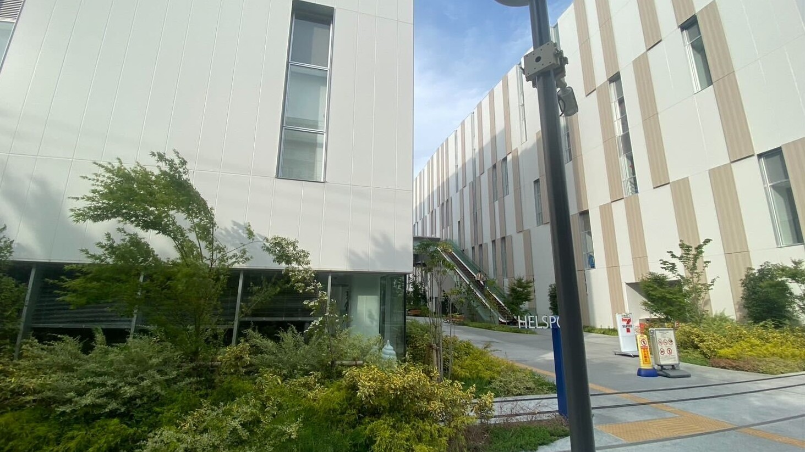
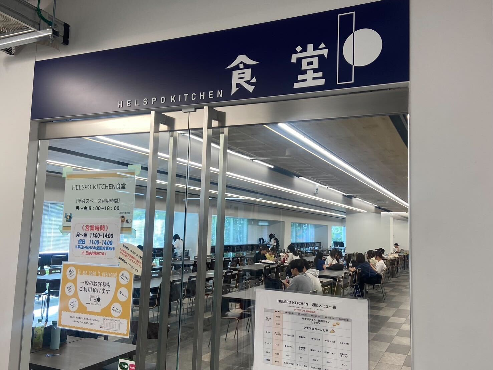

HELSPO KITCHENは年4月に開設された東洋大学赤羽台キャンパスHELSPO HUB-3内にある食堂です。
住所は、東京都北区赤羽台1丁目7−11 です。
(HELSPO HUB-3は2023年に設立した新しい校舎のため、googleマップ上には反映されていませんでした。代わりにHELSPO HUB-3の隣に位置しているWELLB HUB-2のアクセス情報を記載します。)
HELSPO KITCHENの様子
